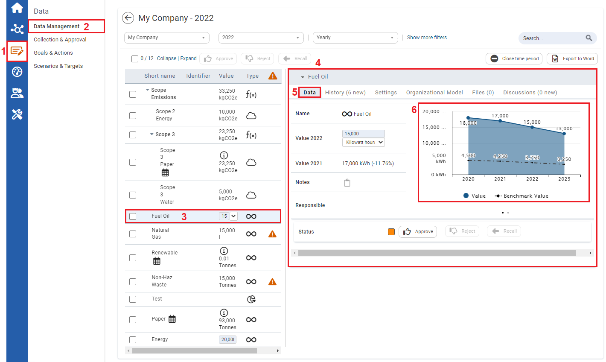

To compare a KPI with a benchmark in a chart

| 1 | On the left navigation panel, click Data. |
| 2 | On the Data menu click Data Management. The Data Management module opens. |
| 3 | Click a KPI where a benchmark is set. |
| 4 | Information on the KPI will display to the right. |
| 5 | Click the Data Tab. |
| 6 | The graph displays the KPI values and Benchmark values. |